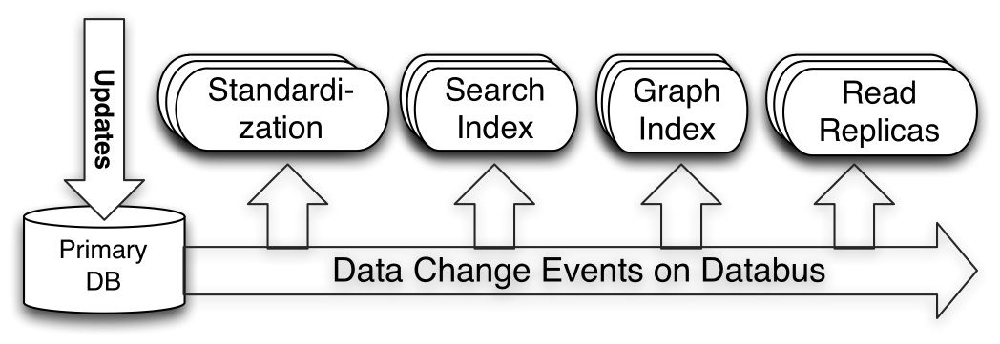

LinkedIn实时低延迟数据抓取系统Databus开源
去年的架构师峰会上，来自LinkedIn的高级软件工程师Lei Gao做了一场名为《LinkedIn的数据处理架构》的演讲，着重介绍LinkedIn内部的数据基础设施的演变，其中提到Databus数据总线项目，当时就引起大家诸多好奇。前不久，LinkedIn工程团队官方博客发布消息：Databus项目开源。
在互联网架构中，数据系统通常分为真实数据（source-of-truth）系统，作为基础数据库，存储用户产生的写操作；以及衍生数据库或索引，提供读取和其他复杂查询操作。后者常常衍生自主数据存储，会对其中的数据做转换，有时还要包括复杂的业务逻辑处理。缓存中的数据也来自主数据存储，当主数据存储发生变化，缓存中的数据就需要刷新，或是转为无效。
LinkedIn内部有很多专用的数据存储和服务系统，构成了一个多种多样的生态系统。基础的OLTP数据存储用来处理面向用户的写操作和部分读操作。其他专用系统提供负责查询，或者通过缓存用来加速查询结果。因此，整个生态系统中就需要一个可靠的、支持事务的、保持一致性的数据变更抓取系统。
Databus就是一个实时的低延迟数据抓取系统。从2005年就已经开始开发，2011年在LinkedIn正式进入生产系统。
在Databus的Github页面上，介绍了他们选择目前解决方案的决策过程。
处理这种需求有两种常用方式：
应用驱动双向写：这种模式下，应用层同时向数据库和另一个消息系统发起写操作。这种实现看起来简单，因为可以控制向数据库写的应用代码。但是，它会引入一致性问题，因为没有复杂的协调协议（比如两阶段提交协议或者paxos算法），所以当出现问题时，很难保证数据库和消息系统完全处于相同的锁定状态。两个系统需要精确完成同样的写操作，并以同样的顺序完成序列化。如果写操作是有条件的或是有部分更新的语义，那么事情就会变得更麻烦。
数据库日志挖掘：将数据库作为唯一真实数据来源，并将变更从事务或提交日志中提取出来。这可以解决一致性问题，但是很难实现，因为Oracle和MySQL这样的数据库有私有的交易日志格式和复制冗余解决方案，难以保证版本升级之后的可用性。由于要解决的是处理应用代码发起的数据变更，然后写入到另一个数据库中，冗余系统就得是用户层面的，而且要与来源无关。对于快速变化的技术公司，这种与数据来源的独立性非常重要，可以避免应用栈的技术锁定，或是绑死在二进制格式上。
在评估了两种方式的优劣之后，我们决定选择日志挖掘，将一致性和单一真实数据来源作为最高优先级，而不是易于实现。
Databus的传输层端到端延迟是微秒级的，每台服务器每秒可以处理数千次数据吞吐变更事件，同时还支持无限回溯能力和丰富的变更订阅功能。概要结构如下图。

图中显示：Search Index和Read Replicas等系统是Databus的消费者。当主OLTP数据库发生写操作时，连接其上的中继系统会将数据拉到中继中。签入在Search Index或是缓存中的Databus消费者客户端，就会从中继中拉出数据，并更新索引或缓存。
Databus提供如下功能：
- 来源独立：Databus支持多种数据来源的变更抓取，包括Oracle和MySQL。Oracle适配器在开源版本中有提供，MySQL适配器将在以后提供。
- 可扩展、高度可用：Databus能扩展到支持数千消费者和事务数据来源，同时保持高度可用性。
- 事务按序提交：Databus能保持来源数据库中的事务完整性，并按照事务分组和来源的提交顺寻交付变更事件。
- 低延迟、支持多种订阅机制：数据源变更完成后，Databus能在微秒级内将事务提交给消费者。同时，消费者使用Databus中的服务器端过滤功能，可以只获取自己需要的特定数据。
- 无限回溯：这是Databus最具创新性的组件之一，对消费者支持无限回溯能力。当消费者需要产生数据的完整拷贝时（比如新的搜索索引），它不会对主OLTP数据库产生任何额外负担，就可以达成目的。当消费者的数据大大落后于来源数据库时，也可以使用该功能。

上图中介绍了Databus系统的构成，包括中继Relay、bootstrap服务和客户端库。Bootstrap服务中包括Bootstrap Producer和Bootstrap Server。快速变化的消费者直接从Relay中取事件。如果一个消费者的数据更新大幅落后，它要的数据就不在Relay的日志中，而是在Bootstrap Producer里面，提交给它的，将会是自消费者上次处理变更之后的所有数据变更快照。
Databus Relay中继的功能主要包括：
- 从Databus来源读取变更行，并在内存缓存内将其序列化为Databus变更事件
- 监听来自Databus客户端（包括Bootstrap Producer）的请求，并传输新的Databus数据变更事件
Databus客户端的功能主要包括：
- 检查Relay上新的数据变更事件，并执行特定业务逻辑的回调
- 如果落后Relay太多，向Bootstrap Server发起查询
- 新Databus客户端会向Bootstrap Server发起bootstrap启动查询，然后切换到向中继发起查询，以完成最新的数据变更事件
- 单一客户端可以处理整个Databus数据流，或者可以成为消费者集群的一部分，其中每个消费者只处理一部分流数据
Databus Bootstrap Producer只是一种特定的Databus客户端，它的功能有：
- 检查中继上的新数据变更事件
- 将变更存储在MySQL数据库中
- MySQL数据库供Bootstrap和客户端使用
Databus Bootstrap Server的主要功能，就是监听来自Databus客户端的请求，并返回长期回溯数据变更事件。
在LinkedIn，Databus支持的系统有：
- 社会化图谱索引（Social Graph Index），服务LinkedIn所有图谱查询
- 人员搜索索引（People Search Index），支持搜索所有LinkedIn用户
- 用户档案数据（Member Profile）多个冗余的读取查询
对Databus项目感兴趣的同学，可以去Github上查看更多信息和相关源码。

深度内容
SOA与API的分裂和统一
Chris Haddad 11月11日
从AutoCAD 360看云计算在CAD领域中的实践
刘亮 11月11日
HDInsight——云上的Hadoop之旅
林默 11月10日


您好，朋友！
您需要 注册一个InfoQ账号 或者 登录 才能进行评论。在您完成注册后还需要进行一些设置。获得来自InfoQ的更多体验。
告诉我们您的想法